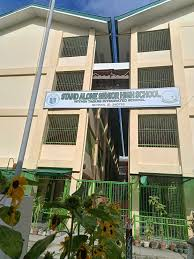
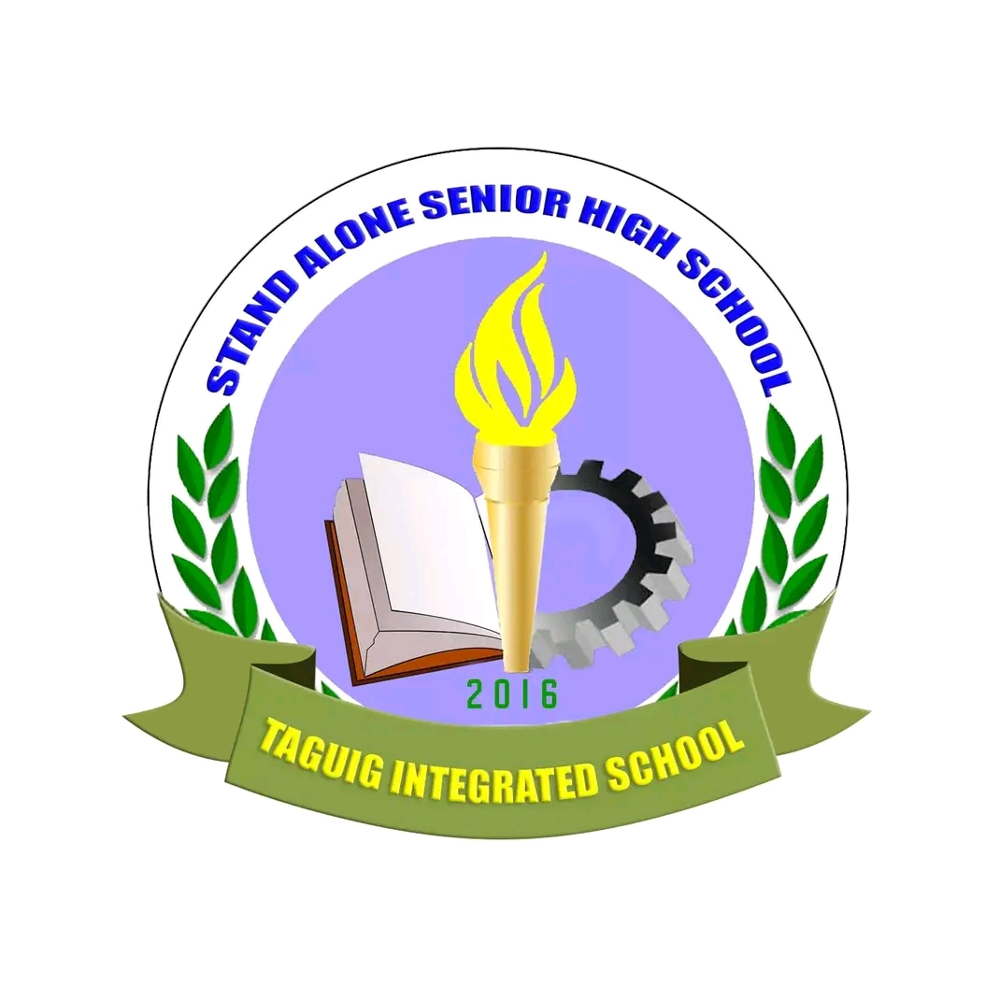

<!DOCTYPE html>
<html><title>HANDS-ON1.html</title></html>
      <h1><center><font face='Courier New'>STAND ALONE SENIOR HIGH SCHOOL-TIS</h1>
      <hr>
        <center><font face= “Jokerman" size=“5”>
          <a href="HANDS-ON2.html">ACTIVITY</a>&nbsp&nbsp&nbsp&nbsp&nbsp&nbsp&nbsp&nbsp&nbsp&nbsp&nbsp<a href="HANDS-ON3.html">GALLERY</a></font>
          <hr>
           &nbsp&nbsp&nbsp &nbsp&nbsp&nbsp 
          <br>
          <h1>          
          <body bgcolor="#B5C7FF"><</body>
          
          <font> Stand-Alone Senior High School within Taguig Integrated School is a public secondary institution in Taguig City, Philippines, operating exclusively for Grade (11-12). It is part of Taguig Integrated School (TIS) but functions independently as a stand-alone senior high school.</font>
          
          <br>
            <br>
            <hr>
          <center><font face="Verdana">Athena Shin G.Magallano</font>
          <center><font face="Verdana">Grade 11 ICT - Industry</font>
